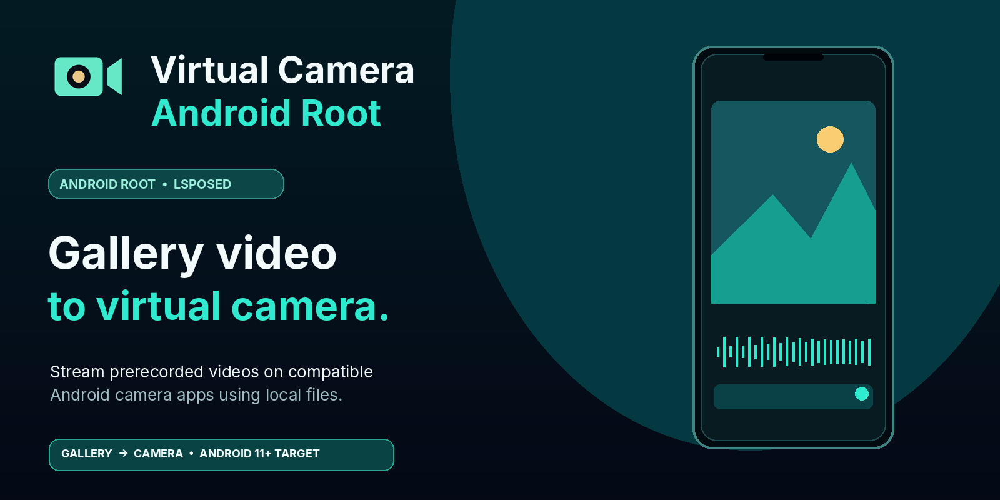
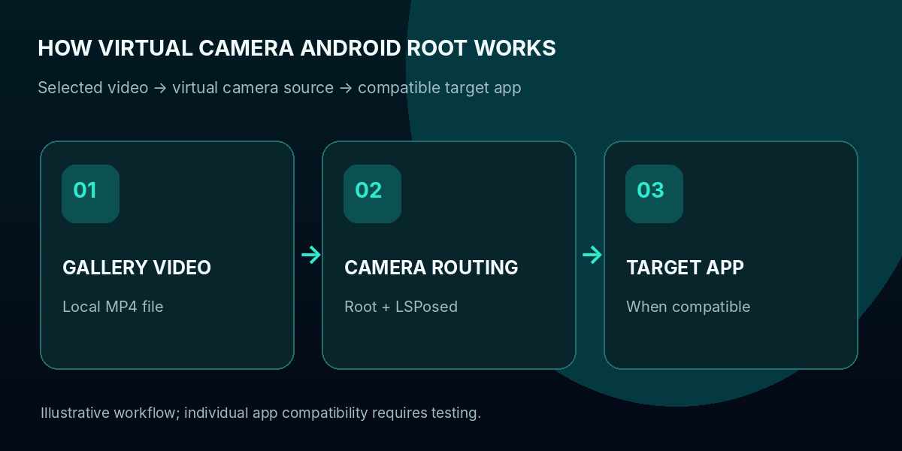
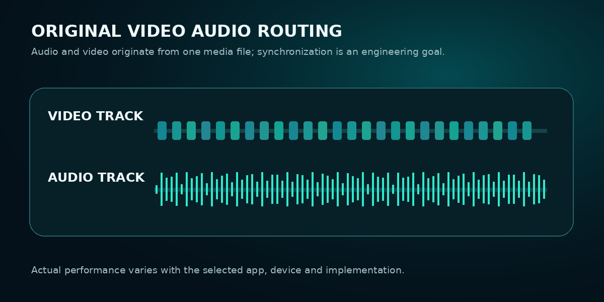
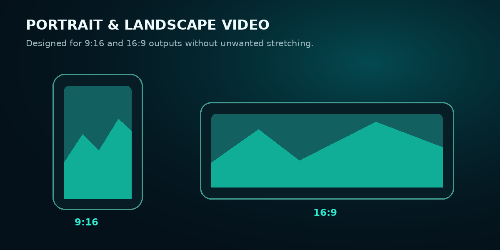

Gallery video input
Choose a prerecorded video stored on your phone and use it as the intended virtual camera source.
Meet Virtual Camera Android Root, a root-powered Android virtual camera designed to help you live stream prerecorded videos from your phone gallery through compatible camera-based apps.
Select an MP4 video, explore source-video audio routing, manage looping and orientation, and give supported streaming workflows a new way to use prerecorded content.
Made for rooted physical Android phones, targeting Android 11+. Features and compatibility depend on app versions, hardware, and implementation.

A different camera source
Virtual Camera Android Root is developed around replacing compatible camera input with selected gallery videos. Its feature set focuses on the details that matter when moving from a video file to camera-based streaming.
Choose a prerecorded video stored on your phone and use it as the intended virtual camera source.
Root and LSPosed-based integration targets compatible front and rear camera requests.
Designed to source sound from the media file, with A/V synchronization as an important development goal.
Audio controls are intended to help avoid unwanted external microphone sound where supported.
Repeat a selected gallery video in extended playback workflows; test actual session reliability.
Support designs for 9:16 vertical and 16:9 horizontal video, with reduced stretching as a goal.
Configure the apps intended to use virtual camera routing rather than enabling every app automatically.
Advanced camera customization for compatible physical phones with root access and LSPosed.
Simple creative concept
The idea is straightforward. The underlying camera and audio compatibility is device- and app-dependent.

More than a camera swap
When you stream a saved video using a virtual camera, the file's soundtrack and the display orientation matter just as much as the image itself.

Original-video audio handling and microphone management are central design areas. Actual audio routing and sync must be validated for each app and device.

Orientation and aspect-ratio handling targets both portrait 9:16 and landscape 16:9 workflows to reduce unwanted distortion.
For modern streaming ecosystems
Looking for an Android virtual camera for TikTok LIVE, Instagram Live, YouTube Live or another social streaming app? Virtual Camera Android Root's development targets camera-based workflows across a broad set of platforms, but implementation varies.
Built for a practical purpose
Virtual Camera Android Root targets people who want a repeatable, prerecorded camera input instead of relying on a physical camera for every session.
Present recorded tutorials, creative clips or prepared demonstrations in compatible camera-based workflows, with disclosure where required.
Explore root/LSPosed camera customization and control which supported applications receive a virtual camera feed.
Use repeatable video material when reviewing camera orientation, source selection, audio timing and integration behavior.
Frequently asked questions
Virtual Camera Android Root is a root-oriented Android virtual camera application designed to send locally stored gallery videos as virtual camera input to compatible apps.
This is Virtual Camera Android Root's principal intended workflow. Whether an actual live stream accepts the virtual camera depends on your phone, the target app and the specific camera and audio implementations.
Virtual Camera Android Root is designed for that kind of virtual camera routing on supported rooted Android devices. Test the selected video, resolution and application before relying on the output.
These services are integration targets, not a universal compatibility guarantee. Every application version and streaming feature may behave differently; live eligibility and platform rules still apply.
Source-video audio routing and microphone management are important Virtual Camera Android Root design goals. Correct synchronization and isolation need validation on the specific application and phone.
Virtual Camera Android Root is designed around vertical 9:16 and horizontal 16:9 video scenarios. Actual output geometry still depends on the target app's supported dimensions and rotation handling.
This product presentation focuses on physical rooted Android smartphones, not emulator-specific builds.
The advanced camera routing described here requires a compatible root and LSPosed environment; this page is not advertising a non-root solution.
Official GitHub Releases · Version 2.0.20
Download Virtual Camera Android Root for the processor architecture of your Android device. Advanced virtual camera functionality targets compatible Android root and LSPosed setups.
For most contemporary ARM-based Android smartphones.
↓ Download arm64-v8a APKVCAR-2.0.20-protected-arm64-v8a.apk
For older or compatible ARM 32-bit Android devices.
↓ Download armeabi-v7a APKVCAR-2.0.20-protected-armeabi-v7a.apk
For compatible Android x86_64 devices or environments.
↓ Download x86_64 APKVCAR-2.0.20-protected-x86_64.apk
Release publishing required: The three direct-download URLs work only after the repository owner publishes release v2.0.20 and uploads APKs with exactly the filenames shown. These links are preconfigured destinations, not verified live downloads. Check Android version, device ABI, root, and LSPosed before installing.